Playing WaterWorks
Let's walk through the first scenario. After that we'll leave the rest for you to explore! You can start by choosing either Career or Sandbox mode.
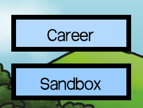If you're new to the game, we recommend starting with Career mode and saving Sandbox mode for when you're more comfortable with the game mechanics.
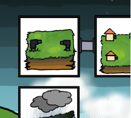On the Career page, select the first scenario. This will give you an introduction to putting together a water system.
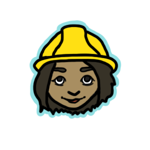Meet CB. She is here to help you understand how the water system works. If you get stuck, just click on her and she'll help you out.
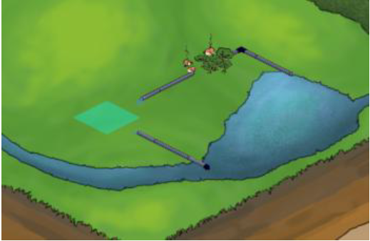In the first scenario, you will see a water system that is nearly complete. To complete the system, click on the gap between the pipes as shown here.
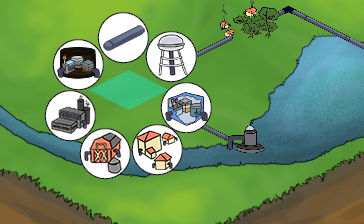This brings up a pop-up menu that you can use to select what you want to put in this square.
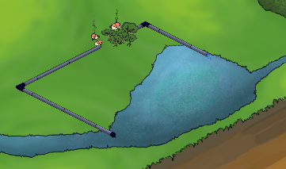Click on the pipe icon to connect the existing pipes so that the water can flow from beginning to end!
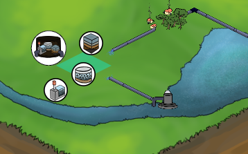Click on the waste water treatment plant to choose from different types of wastewater treatment plants.

The waste water treatment plant looks as above.
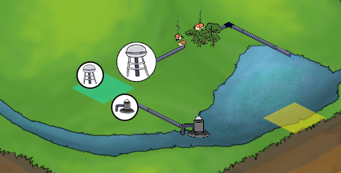You have a choice between the water source and water tower as the infrastructure elements.
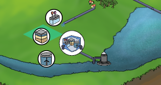Click on the Primary, Secondary or Tertiary drinking water treament plants to install them.
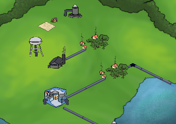You can also add many other types of sites. Feel free to explore!
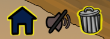Throughout the duration of the game, you will use and become familiar with
all the different parts of the water system.
The buttons at the bottom left let you exit back to the main menu,
toggle the background music on and off, and allow you to delete a feature of the
water system that you have previously placed by clicking on it and then clicking
on the trash can.